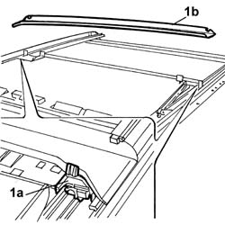
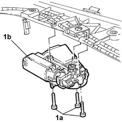
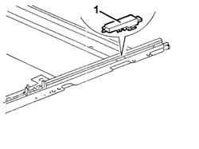
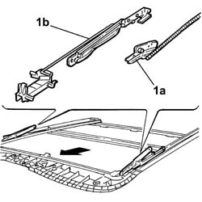

7030B45 DRIVE CABLE (one), left or right - R.R. with sun roof assembly removed
- Path
- Procedures > 70 FITTINGS > 7030 SUN ROOF AND HOOD > 7030B SLIDING ROOF > 7030B45 DRIVE CABLE (one), left or right - R.R. with sun roof assembly removed
- Kind
- repair procedure (removal / refitting; the operation number is the code)
- Applies to
- all engines; all production periods
- Interactive page
- https://sloeber94.github.io/elrnDB-lThss/en/#/113700
Applies to: all engines; all production periods
 Removing
Removing
 Refitting
Refitting1. Acting on the retaining springs (1a) remove the water drainage channel (1b).

Applies to: all engines; all production periods
1. Undo the fixing bolts (1a) and remove the sunroof motor (1b).

Applies to: all engines; all production periods
1. Release the end of travel mounting on both sides.

Applies to: all engines; all production periods
1. Release the slide (1a) from the housing in the direction shown by the arrow and then release it from the drive cable (1b).
- Release the drive cable and remove it.
Applies to: all engines; all production periods
Refitting
Removing- Check the condition of each individual component.
1. Fit the drive cable (1a) in the housing and secure it to the slide (1b).
- Place the slide in the end of travel position, until it is in the "tilted" position.

Applies to: all engines; all production periods
1. Fit the end of travel mounting on both sides.
Applies to: all engines; all production periods
- Position the motor and secure it using the bolts.
- Position the water drainage channel in the housing until the click of the retaining springs is heard.